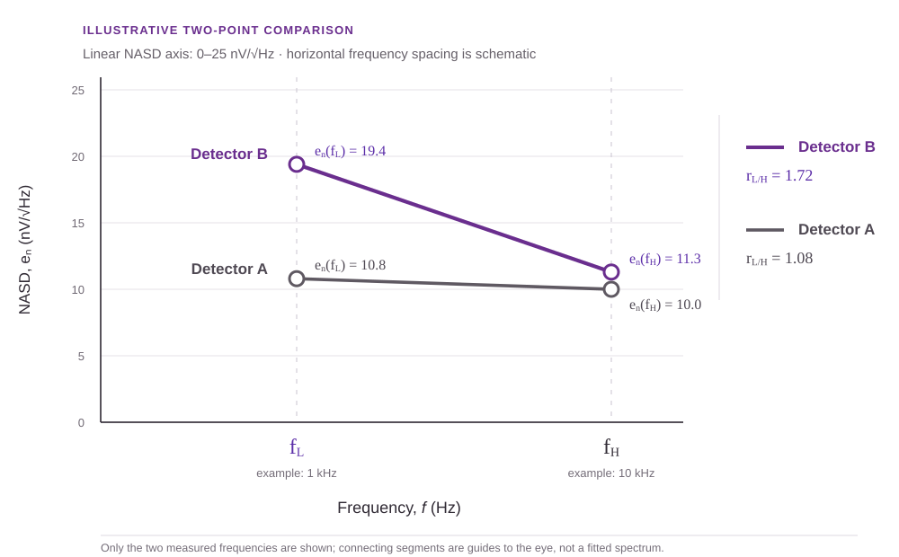

From repeated photoconductor testing: 1 kHz and 10 kHz were useful because they were measured consistently across devices. They are examples, not universal constants. The value comes from comparing the same lower and higher points under the same conditions.
A full noise spectrum contains far more information than two measurements. It can reveal the low-frequency rise, the flatter generation-recombination region, the GR rolloff, narrow interference peaks, and the eventual system or Johnson floor.
But repeated detector testing often produces noise values at the same small set of frequencies. A simple ratio can turn two of those routine measurements into a useful screening heuristic.
The ratio does not identify a microscopic mechanism. It answers a narrower question: is the lower-frequency noise elevated relative to a higher reference point?
Noise amplitude spectral density at the lower frequency divided by the higher reference.
A ratio adds spectral shape to an absolute noise value
A noise value at fH tells you the detector’s absolute noise level at that frequency. It does not show whether the spectrum remains flat as frequency decreases.
The ratio rL/H adds that missing information:
The measured spectrum is nearly flat between the two selected points, assuming the detector remains above the readout floor.
The lower-frequency point is elevated. Low-frequency excess noise may be extending into the normal test band.
The higher point is larger. Check interference, resonances, bandwidth limits, or inconsistent measurement conditions.
There is no universal pass/fail value. The most useful reference is usually the distribution produced by comparable detectors measured with the same procedure.
Two detectors can look equal at one frequency and very different at another
Suppose two detectors have nearly the same noise at the higher reference frequency. A single-frequency comparison would treat them as similar. At the lower frequency, however, one detector may remain flat while the other rises sharply.

| Detector | Noise at fL | Noise at fH | rL/H | Immediate read |
|---|---|---|---|---|
| Detector A | 10.8 nV/√Hz | 10.0 nV/√Hz | 1.08 | Nearly flat |
| Detector B | 19.4 nV/√Hz | 11.3 nV/√Hz | 1.72 | Low-frequency rise |
The ratio makes the difference visible immediately. It is particularly useful across detector populations, where it can identify outliers that deserve a full frequency sweep.
The frequencies are chosen by function, not by convention
The method is general. Use a lower comparison frequency fL and a higher reference frequency fH. The pair should already be part of a stable, repeatable test band for the detector population.
Higher reference: fH
Choose a point in the established flat GR measurement region, below the detector or readout rolloff and away from isolated interference.
Lower comparison: fL
Choose a lower point that is normally still usable, but close enough to the low-frequency side that an upward-shifted noise knee can elevate it.
For many HgCdTe or InSb photoconductor test programs, 1 kHz and 10 kHz are convenient examples. Their usefulness comes from repeatability and their location in the established measurement band—not from any fundamental property of those exact values.
Important: the ratio does not require the noise to follow an exact 1/f law. Two points are being compared directly; no spectral exponent is assumed.
The ratio is related to the low-frequency knee
The low-frequency knee is the approximate transition between the rising excess-noise region and the flatter mid-frequency region. Its exact location requires a frequency sweep and depends on how the transition is modeled.
The two-frequency heuristic does not locate the knee. It indicates when the knee may be moving far enough upward to affect the lower comparison point:
- If the knee lies well below fL, both measurements may remain nearly flat and the ratio tends toward unity.
- If the knee approaches or extends above fL, the lower measurement rises while fH remains a useful reference.
- A full spectrum is still required to distinguish a broad low-frequency rise from a narrow interference feature or another frequency-dependent process.
This is why the ratio works well as a screening quantity: it does not replace the spectrum; it identifies which spectra are worth acquiring next.
What an elevated ratio may flag
An unusually large ratio within a comparable detector population can be consistent with several detector or measurement problems:
- poor passivation;
- high surface or interface trap density;
- contact-related fluctuations;
- current crowding or nonuniform current flow;
- material or process nonuniformity;
- bias instability or self-heating;
- slow thermal drift;
- electromagnetic or readout contamination.
The ratio is therefore a flag, not a diagnosis. Bias sweeps, temperature dependence, full spectra, geometry comparisons, contact studies, and passivation experiments are what separate the possible causes.
The ratio is only useful when both points belong to the detector
Keep the test chain quieter than the device.
For biased photoconductors, battery-based bias can reduce supply ripple and switching noise. An appropriately matched ultra-low-noise preamplifier helps keep the readout floor below the detector. A Faraday cage, short shielded wiring, and disciplined grounding reduce electromagnetic pickup. Both measurements must also use equivalent or correctly normalized ENBW, with detector temperature, bias, resistance, and optical condition held constant.
These controls do not define rL/H. They determine whether the ratio reflects detector behavior rather than the bench.
A compact comparison record
A useful record contains the two measured noise densities, their ratio, and enough operating information to reproduce the comparison:
When 1 kHz and 10 kHz are used, report those values explicitly. Do not present them as universal detector standards.
Bottom line: a two-frequency ratio is a fast, repeatable heuristic for identifying photoconductors whose low-frequency excess noise reaches farther into the normal test band than it does in comparable devices.
The full spectrum remains the final test
Use the ratio to identify outliers. Use the complete noise spectrum to resolve the knee, inspect narrowband artifacts, and test physical models.
Read the noise-spectrum reference